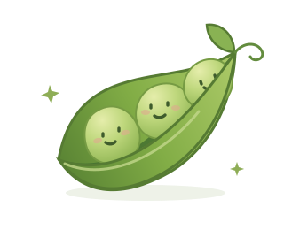

Offline desktop previewLive connections are optional. Keys stay in this tab, not on a developer server.
Tab-only
● A LITTLE LESS ORDINARY
Ideas grow in good company.
A curious mind. A little mischief. Room for whatever’s on yours.

Ready when you are.
A little context makes good company.
File context ·
LESS SCROLLING. MORE PERSPECTIVE.
A little space for your day.
Quick glance
UpcomingSynthetic calendar exampleSample
A quiet place to plan.
InboxConnect Gmail for this profileNot connected
Read-only sender, subject and short preview. Model sharing is controlled separately in service settings.
Story board0 open
Story-sized work, from spark to your approval. Queued stories never run automatically. Team means your configured Greenhouse collaboration or specialist model.
Checking local board…
Capture a story
“Show my tasks”, “queue task 1”, “assign task 1 to team”, “do task 1”, “remove task 1”, “restore task 1”. Voice recognition fills the box for your review.
Created by PEARecent files
Creation date, not modification date. Manually added files appear in Greenhouse.
FROM THOUGHT TO SOMETHING TANGIBLE
Your little creative greenhouse.
Grow an idea together.
Same companion, separate collaboration thread. Chat keeps its model. Optional specialists never change Chat.
DOCUMENT
Choose something to explore.
Documents, images, code and diagrams. Previewed locally; nothing executes.